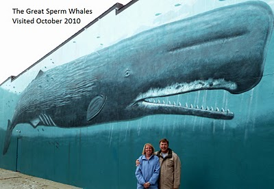

Driving into New London, CT while staring at the iPhone for directions and looking for street signs we managed to drive right past The Great Sperm Whales without seeing it which is pretty hard as it’s right on the main street. The wall is in great shape and is one of the most approachable walls we’ve seen. The wall is big and it was pretty hard to get all of it in a picture so here is part of it.
American Discount Building
124 Captain’s Walk & State Street
New London, Connecticut
170 Feet Long x 35 Feet High
Dedicated July 12th, 1993
Excerpt from @wylandfoundation on Instagram
*After painting Wall 40 in New York, Team Wyland was looking forward to moving on to the smaller town of New London, Connecticut. Not only was it a small community, it also had a long history of whaling, having been, at one point in the mid-1800’s, one of the busiest whaling ports on the East Coast.
“I especially like to paint Whaling Walls in these cities because they have such a rich heritage in maritime history,” Wyland explains. “With the exception of Japan, Norway and a few other countries, whaling has been replaced by whale watching, which many old whaling villages have found to be very healthy for tourism and economic development.”
Despite a New England summer heat wave that caused Wyland to have to come down off the wall and receive treatment for heat stroke, the New London wall went, as the artist put it, “swimmingly.” The mural, depicting a family of sperm whales, Connecticut’s state mammal, helped to draw up to 250,000 people to New London’s Sail Feast, the city’s annual maritime festival, prompting the mayor to name July 6-12 “Wyland Week!” The landmark mural was dedicated by Governor Lowell Weiker, who presented the artist with a special proclamation.
Current Update: Repainted in 2006 by David Bishop of Mystic, CT,(WCRC) and any damage is repaired each year by Whaling City Restoration Committee. Whaling Wall 41 is complete as originally painted in 1993.